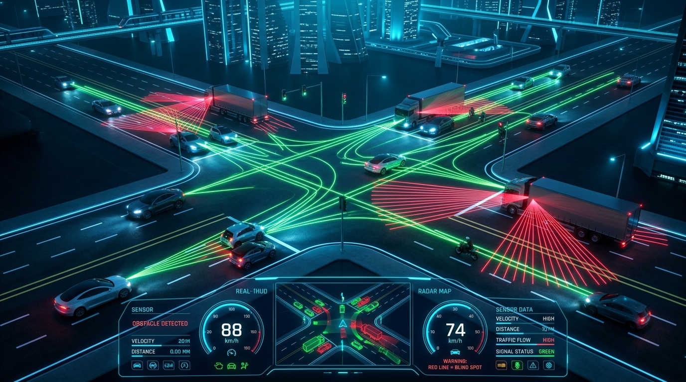
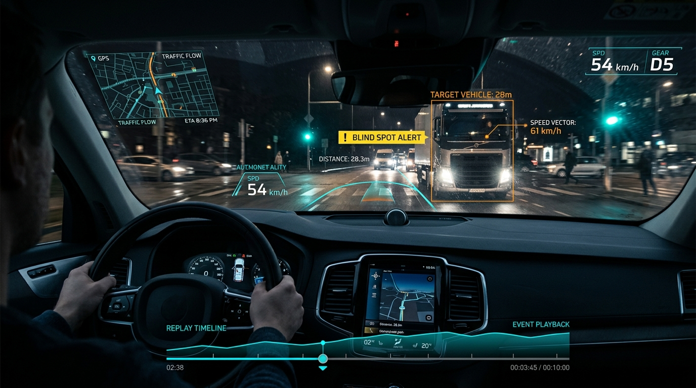

片側2車線の交差点・8の字周回街区を舞台に、リアルタイム視線Raycast解析と剛体物理シミュレーションを融合。事故原因の直感的な体感とデータ検証を実現した次世代シミュレーター。

対向の大型トラックの背後に隠れる二輪車（バイク）。スライダーを動かして自車のドライバー視点からレイキャスト（視線）がどう遮られるかをリアルタイムにお試しください。
スライダーで車両位置を動かすと、Raycast判定がリアルタイムに更新されます。
単なるゲームではなく、科学的アプローチに基づいた視線追跡・物理演算・シナリオカスタマイズを提供。
MuJoCo の `mj_ray` 機能により、運転席の視点から各対象への視線を毎フレーム追跡。ピラーや大型車の陰に隠れた対象を緑/赤の線で即座に判定・可視化します。
車両のサスペンション挙動、タイヤ摩擦力、車重移動、そして衝突時の激しいインパルスと跳ね返りを WebAssembly 物理エンジンで忠実に再現します。
AIによる完全自動走行(Auto)、判断タイミングのみを操作する(Pedal)、ハンドルとペダルをフル操作する(Manual)の3つの運転モードをシームレスに切替可能。
運転者のリアルな目線(Driver)、車体後方(Chase)、マウスで全方位を観察する(Orbit)、南東電柱のCCTV交通カメラ(Corner)を即座にスイッチ可能。
交通量、大型車比率、バイク比率、自車Gap許容秒数、ドライバー反応遅延時間、黄信号突入率など多岐にわたる危険パラメータを自由に調合できます。
直近の走行と衝突シーンをフレーム単位で巻き戻し・再生。JSONデータとしての保存・読込や、高画質WebM動画ファイルへの書き出しに対応。

交差点事故の中で最も死亡重傷率が高い「右折車と直進二輪車の衝突（いわゆるサンキュー事故・死角事故）」。本シミュレーターは人間の認知限界と物理的死角を科学的に明らかにします。
バイクは車体が小さいため、実際よりも「遠く・遅く」見える錯覚が生じ、無理な右折判断を誘発します。
対向の右折待ちトラックの陰にバイクが隠れると、直前の約1.5秒前まで完全に視界から消滅します。
Aピラー（フロントピラー）の幅と頭部移動の遅れにより、歩行者や自転車を見落とす現象を運転席視点で体感可能。
教育研修、工学分析、直感体験の各フェーズに最適な視点と操作系を提供。
対向車の接近速度や死角、安全ギャップ（Gap）をAIが自動計算して8の字コースを周回。安全運転アルゴリズムのベンチマークになります。
ステアリングは自動ですが、加速・維持・ブレーキのタイミングをプレイヤーが判断。対向車の隙間を突く「判断の難しさ」を直感体験できます。
ハンドル操舵（←/→）とペダル操作を完全にコントロール。周回コースを外れて街区全体（±170m）を自由に探索・走行可能。
受講生に対し、言葉や2D図面では伝わりにくい「トラックの陰からの急な飛び出し」や「運転席からの死角」をリアルに体感させ、危険予測能力を高めます。
大型車特有の死角、左折時の二輪巻き込み事故防止、交差点進入速度の重要性を定量的なパラメータとリプレイで反省・教育できます。
MuJoCoの物理エンジンと視線判定をベースに、死角から急加速するバイク等のエッジケースシナリオにおけるセンサー遮蔽状態を検証。
交差点信号サイクル、交通密度、ギャップ受け入れ時間（Accepted Gap）が事故発生率に及ぼす影響をシミュレーション統計で評価。
デスクトップ版（macOS / Windows）は軽量かつ高速なTauriフレームワークでビルドされており、リプレイのローカルファイル保存やWebM動画の高速書き出し、オフラインでの安定動作に最適化されています。
DeepMind社が開発・オープンソース化した世界トップクラスの物理エンジン「MuJoCo」をWebAssembly形式で採用しています。剛体の接触力、摩擦係数、サスペンションの減衰、衝突時の運動量保存則を厳密に計算します。
はい。シミュレーション稼働中であっても『S』キーまたは設定ボタンから、交通量やトラックの比率、自車の判断間隔（Gap）などを即座に変更し、状況変化をリアルタイムに観察できます。
はい。リプレイモード（Rキー）から任意のカメラアングルを選び、「⏺ 動画」ボタンを押すことで高画質なWebM形式で事故シーンをエクスポート可能です。
Cyber Matrix 公式製品ページ（https://cyber-matrix.netlify.app/products/intersection）にて最新版のダウンロードや詳細仕様の確認が可能です。